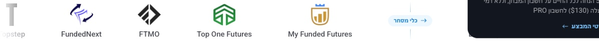
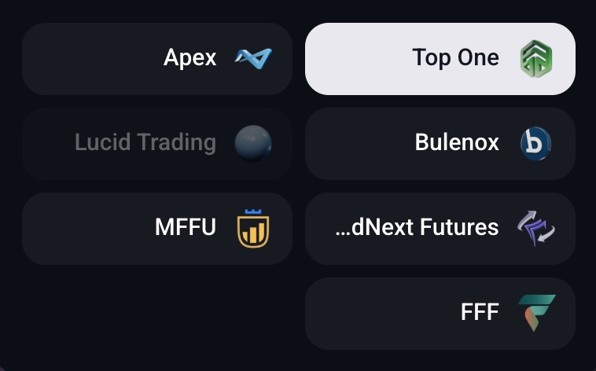
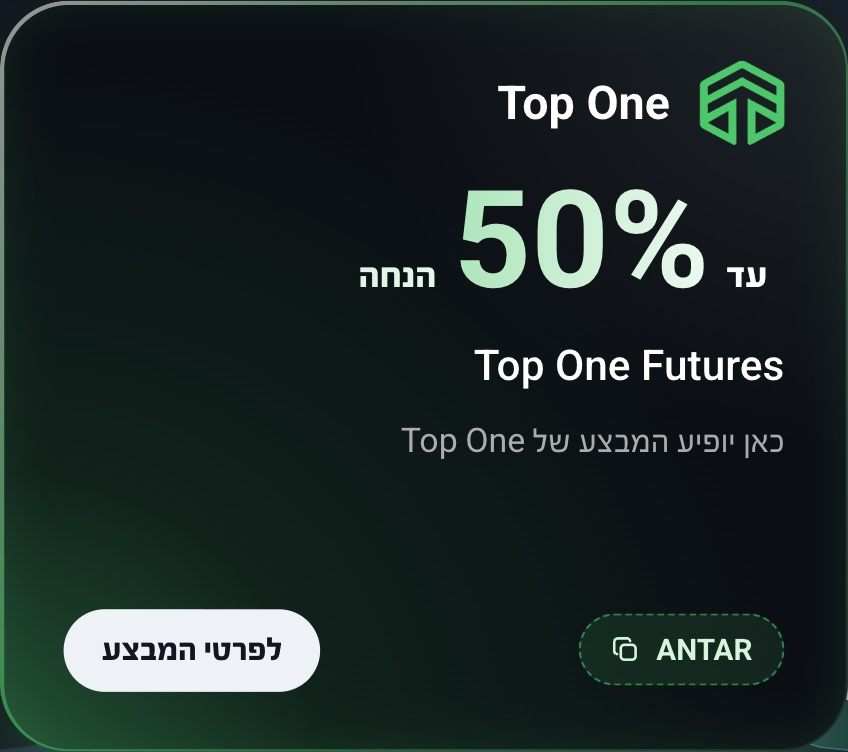
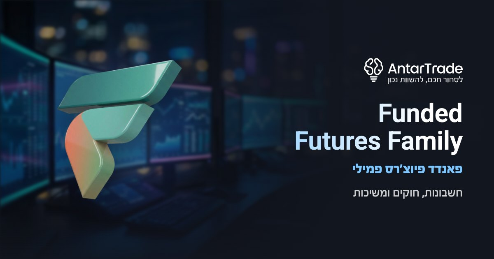

מה הוכן לפי הרשימה של נועם, איפה כל דבר מופיע באתר, ואיך זה נראה. כל הקבצים כבר מחוברים בקוד, כך שברגע שנועם ימזג ויפתח את החברות, הכל יעלה לבד.
הפס הלבן שרץ בדף הבית מציג לכל חברה סמל שטוח בצבעים שלה. לחדשות הופיע עד עכשיו הלוגו הרגיל, בהיר מדי על לבן. עכשיו יש להן סמלים כמו לשאר: Top One בירוק אחיד, MFFU בזהב עמוק עם הכתר הכחול, ו-FFF בגוון מעט כהה.

FFF לא מופיעה בפס, כי נועם קבע שהיא לא תופיע ברשימות באתר, רק בעמוד שלה.
בדו-קרב, כשבוחרים חברה הכפתור שלה נהיה לבן ומציג את הסמל התלת-ממדי שלה בצבע מלא. לכל החדשות הוכן סמל כזה, באותו גודל ובאותו סגנון של הישנות.

הדמיה: עמוד הדו-קרב עוד לא מקבל את החברות החדשות מהמאגר, כי הן מוסתרות. הצילום לקוח מהעמוד האמיתי, והכנסתי לתוכו את הסמלים החדשים.
לכל כרטיס מבצע יש שלושה גוונים: הזוהר, הגוון העמוק שבפינה, והגוון הבהיר של הקוד. ל-Top One נשארו הירוקים שנועם הכניס, כי הם תואמים את הירוק שלה בשאר האתר. מה שתוקן: הלוגו. בשאר הכרטיסים הלוגו צבוע בצבע הזוהר של הכרטיס, וב-Top One הופיע הלוגו הצבעוני הרגיל. עכשיו הוא בירוק של הכרטיס, כמו כולם.

הדמיה: ל-Top One אין עדיין מבצע פעיל, ולכן הכרטיס שלה לא מופיע באתר. צבעתי כרטיס קיים בצבעים ובלוגו שלה. המספר והטקסט לדוגמה בלבד.
התמונות של MFFU ו-FFF כבר היו אצל נועם באתר. חסר רק החיבור שלהן לעמודים, וזה מה שהוספתי. התמונה של Top One כבר הייתה מחוברת.

FFFדף הבית עם החברות החדשות פתוחות, רק בתצוגה הזאת. פס הלוגואים נמצא מתחת לפתיחה.
לתצוגה החיה